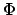
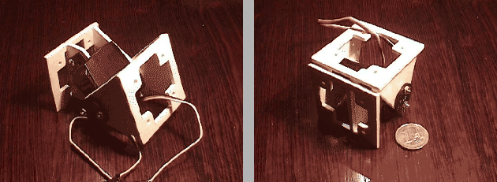

En la figura ![[*]](crossref.png) se muestra una foto del módulo en
la que el servo está en diferentes posiciones. El módulo se divide
en dos partes, que pueden rotar una con respecto a la otra, denominadas
cuerpo y cabeza. El servo se encuentra atornillado
al cuerpo mediante dos tornillos de
se muestra una foto del módulo en
la que el servo está en diferentes posiciones. El módulo se divide
en dos partes, que pueden rotar una con respecto a la otra, denominadas
cuerpo y cabeza. El servo se encuentra atornillado
al cuerpo mediante dos tornillos de

3mm y 10 mm de largo. Es un servo del tipo futaba 3003, con una corona de 21mm.
|
 |
La cabeza por una lado está atornillada a la corona del servo, con dos tornillos iguales a los anteriores y por otro lado directamente al cuerpo, formando un ``falso eje'' que permite que el peso se reparta. No obstante, la fuerza que genera el servo sólo se transmite por la corono, el falso eje sólo es de apoyo.
En la figura se muestra el módulo en el
que la cabeza está situada en diferentes ángulos con respecto al cuerpo.
Y en la figura se muestra el módulo por
el lado del falso eje.
El recorrido de la cabeza es de 180 grados, que puede estar situada
en una posición de -90 a 90 grados con respecto al cuerpo. El tamaño
del módulo es el mínimo posible usando el servo futaba 3003. Las
bases son cuadradas, de 52x52mm. Si el módulo está situado como en
la figura , la altura y la anchura son fijas, determinadas
por la base. La longitud depende de la posoción entre el cuerpo y
la cabeza. Cuando el módulo está en posición natural (la cabeza forma
0 grados con respecto al cuerpo), es de 74mm (máxima) y cuando está
en un extremo es de 55mm.
El módulo está constituido por 5 piezas diferentes, construidas con
PVC expandido de 3mm de grosor. También se ha realizado un
prototipo en metacrilato, que es más rígigido, pero tiene la ventaja
de que es transparente y permite ver el interior. Los planos
se encuentra en el apéndice . La nomenclatura
para nombrar las piezas es la siguiente:
.
En el diseño de los módulos no se ha previsto que la electrónica se encuentre en su interior ni tampoco la alimentación. Con esta primera generación se ha querido evaluar la viabilidad mecánica y las posibilidades de conexión en fase o desfasados.